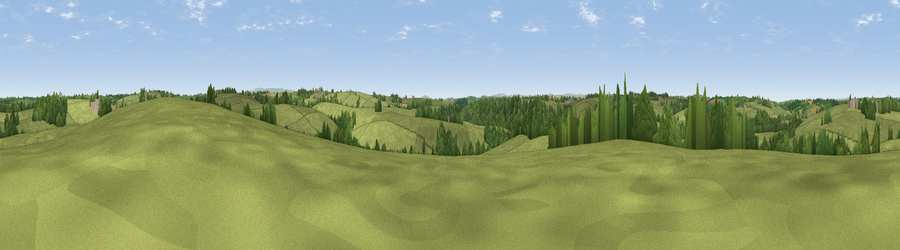

Viewpoint near North Tamerton
#31574 in England · top 72% of its area beats it · near North TamertonWhere it is
The exact computed spot (SX 33325 95575). Click the marker for map links.
The view, rendered

A 360° render of this exact spot computed from the terrain model, tree cover and land cover — summer colours, afternoon light, calibrated against photographs of famous viewpoints. Real trees, hedges and buildings will differ in detail.
The panorama
Grey silhouette: terrain skyline in each direction (720 bearings, Earth curvature and refraction included). Dashed green: skyline with trees (+15 m) and buildings (+8 m) as obstacles. Blue strip: how far the ground is visible on each bearing.
Where the view opens
Wedge length = distance to the farthest visible ground on that bearing (vegetation-aware). Rings at 10, 25 and 50 km.
What fills the view
77% grassland · 20% woodland · 3% cropland
Angular shares of the visible panorama (visual magnitude), not map area. Landscape diversity 0.28 (0–1 Shannon).
Key numbers
More beautiful places nearby
The staircase of upgrades: each row has a higher view potential than everything closer. Driving times are estimates from straight-line distance, calibrated against real road routing — check an actual route before setting out.
| Place | Direction | Drive | Score |
|---|---|---|---|
| Viewpoint near Chapmans Well | SE · 2 km | ~5 min | 46.1 |
| Viewpoint near Chapmans Well | S · 3 km | ~7 min | 47.2 |
| Viewpoint near Chapmans Well | SE · 4 km | ~8 min | 57.4 |
| Viewpoint near Whitstone | WNW · 7 km | ~15 min | 58.5 |
| Viewpoint near Whitstone | WNW · 8 km | ~16 min | 69.4 |
| Viewpoint near Warbstow | WSW · 14 km | ~25 min | 71.2 |
| Viewpoint near Poundstock | WNW · 15 km | ~27 min | 76.0 |
| Viewpoint near Poundstock | WNW · 16 km | ~28 min | 79.7 |
50.73581, -4.36336 · source: screening · position refined by local search. Computed location — check access rights before visiting.